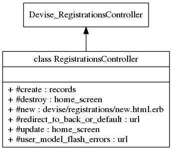

Class: RegistrationsController
- Inherits:
-
Devise::RegistrationsController
- Object
- Devise::RegistrationsController
- RegistrationsController
- Defined in:
- app/controllers/registrations_controller.rb
Overview
Handles *Devise/Stripe Registrations.It basically adapts the
methods of devise when needed mainly for stripe integration.
Corresponding integration tests

Instance Method Summary collapse
-
#create ⇒ records, error
To create a new registration, we check that it is valid for User model and no email duplicated, then we create the stripe records first and if OK we create the user.
-
#destroy ⇒ home_screen, error
To delete a registration, we delete the stripe records first and then the user.
-
#new ⇒ devise/registrations/new.html.erb
call super devise methods.
-
#redirect_to_back_or_default(*args) ⇒ url
redirect to previous page and if not present to home.
-
#update {|resource| ... } ⇒ home_screen, error
Code copied from devise and modified to get flash error messages All the errors are rescued with flash message.
-
#user_model_flash_errors ⇒ url
Prepare the error flash message.
Instance Method Details
#create ⇒ records, error
To create a new registration, we check that it is valid for User model and
no email duplicated,
then we create the stripe records first and if OK
we create the user.
All the errors are rescued with flash message.
23 24 25 26 27 28 29 30 31 32 33 34 35 36 37 38 39 40 41 42 43 44 45 46 47 48 49 50 51 52 53 54 55 56 57 58 59 60 61 62 63 64 65 66 67 68 69 70 71 72 73 74 75 76 77 78 79 |
# File 'app/controllers/registrations_controller.rb', line 23 def create build_resource(sign_up_params) # initialize empty fields resource.email = params[:stripeEmail] resource.stripe_card_token = params[:stripeToken] resource.invoice_count = 1 # need to initialize to 1 because customer.created event can arrive after resource.valid? # check if the user models verifications are good if !resource.errors..empty? # there is at least an error user_model_flash_errors # check that this email has not yet been created in user table elsif User.exists?(email: params[:stripeEmail]) redirect_to_back_or_default(alert: t('email_allready_used')) else # create Stripe customer first begin if resource.plan_id.length.zero? && Rails.env.test? resource.plan_id = 'month-plan' # force plan if empty mainly for testing purpose end Stripe::Customer.create( email: params[:stripeEmail], source: params[:stripeToken], plan: resource.plan_id ) rescue Stripe::CardError flash[:notice] = t('stripe_card_error') redirect_to new_selector_path return rescue Stripe::StripeError flash[:notice] = t('stripe_error') puts "create error: #{e.}" redirect_to new_selector_path return end # create Devise user resource.language = I18n.locale.to_s resource.save yield resource if block_given? if resource.persisted? if resource.active_for_authentication? :notice, :signed_up system 'sms_create_user.sh' if Rails.env.production? sign_up(resource_name, resource) respond_with resource, location: after_sign_up_path_for(resource) else :notice, :signed_up_but_#{resource.}" expire_data_after_sign_in! respond_with resource, location: after_inactive_sign_up_path_for(resource) end else clean_up_passwords resource set_minimum_password_length respond_with resource end end end |
#destroy ⇒ home_screen, error
To delete a registration, we delete the stripe records first and then the
user.
All the errors are rescued with flash message.
112 113 114 115 116 117 118 119 120 121 122 123 124 125 |
# File 'app/controllers/registrations_controller.rb', line 112 def destroy # first delete Stripe customer begin cu = Stripe::Customer.retrieve(resource.customer_id) cu.delete rescue Stripe::StripeError flash[:notice] = t('stripe_error') redirect_to edit_user_registration_path return end # then delete user with Devise super system 'sms_delete_user.sh' if Rails.env.production? end |
#new ⇒ devise/registrations/new.html.erb
call super devise methods
12 13 14 |
# File 'app/controllers/registrations_controller.rb', line 12 def new super end |
#redirect_to_back_or_default(*args) ⇒ url
redirect to previous page and if not present to home
129 130 131 132 133 134 135 |
# File 'app/controllers/registrations_controller.rb', line 129 def redirect_to_back_or_default(*args) if request.env['HTTP_REFERER'].present? && request.env['HTTP_REFERER'] != request.env['REQUEST_URI'] redirect_to :back, *args else redirect_to root_url, *args end end |
#update {|resource| ... } ⇒ home_screen, error
Code copied from devise and modified to get flash error messages All the errors are rescued with flash message.
86 87 88 89 90 91 92 93 94 95 96 97 98 99 100 101 102 103 104 105 |
# File 'app/controllers/registrations_controller.rb', line 86 def update self.resource = resource_class.to_adapter.get!(send(:current_#{resource_name}").to_key) prev_unconfirmed_email = resource.unconfirmed_email if resource.respond_to?(:unconfirmed_email) resource_updated = update_resource(resource, account_update_params) yield resource if block_given? if resource_updated if is_flashing_format? flash_key = update_needs_confirmation?(resource, prev_unconfirmed_email) ? :update_needs_confirmation : :updated :notice, flash_key end sign_in resource_name, resource, bypass: true respond_with resource, location: after_update_path_for(resource) elsif !resource.errors..empty? # there is at least an error user_model_flash_errors else clean_up_passwords resource respond_with resource end end |
#user_model_flash_errors ⇒ url
Prepare the error flash message
139 140 141 142 143 144 145 146 147 148 149 150 151 152 153 154 |
# File 'app/controllers/registrations_controller.rb', line 139 def user_model_flash_errors case resource.errors.keys.first when :password_confirmation redirect_to_back_or_default(alert: t('password_confirmation_error')) when :email redirect_to_back_or_default(alert: t('email_allready_used')) when :password redirect_to_back_or_default(alert: t('password_error')) when :name redirect_to_back_or_default(alert: t('name_blanck_error')) when :current_password redirect_to_back_or_default(alert: t('password_error')) else redirect_to_back_or_default(alert: t('user_parameter_error')) end end |